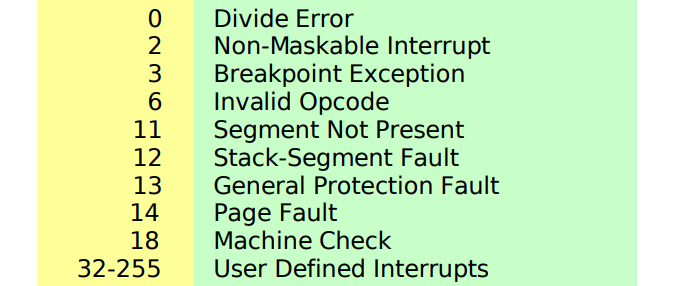

About Me
Hi, I'm an engineer with interests in infrastructure and cloud.
Feel free to explore my blog where I share insights, tutorials, and much more!
Here I post about technology, life, universe and pretty much anything that I find interesting
Hi, I'm an engineer with interests in infrastructure and cloud.
Feel free to explore my blog where I share insights, tutorials, and much more!
Programming languages vary in how much abstraction they offer to the programmer. This ranges from no abstraction, reffered low level, to high abstraction which are called high level languages.
Siganl is a type of interrupt that is generated by some event, and is either handled by the kernal or the process at receiving end. Between the time its generated and is handled, it is said to be pending.
For some code segment to not be interrupted, we can add a signal to the list of masked signals. This could be important in a situation where some action should be performed only when signal is not yet arrived. For example, for SIGALRM we implement a handler that sets a flag whenever the signal arrives and then we check the flag in the main code and reset it. To prevent additional SIGALRM from interrupting the main code, we mask the signals. When a signal arrives, the disposition of that signal defines how it will be handled. Either it will do the default action or a signal handler will be called. The process of telling the kernal to invoke signal handler is installing the signal handler. And when the signal handler executes, its called the signal is caught. In python signal.signal() allows writing signal handlers. It is not possible to set the disposition of a signal to terminate or core dump unless its the default action of that signal. Also all signals have a default action, e.g SIGINT's default action is to terminate the process.
In linux terminal, we can send a signal using kill command, like this: kill -9 *pid* where 9 is the signal number of SIGKILL whose default action is to terminate and it can't be ignored/caught.
A process can also send a signal to another process using kill(pid, sig) syscall. When a process calls wait() syscall, then the execution of parent process is suspended and it waits for SIGCHLD signal to arrive. This signal is sent by the kernal when a child process terminates, upon receiving SIGCHLD, the parent reaps the child process from process table. This is how parent process knows that all traces of child are removed from the system. If the parent process does not wait for the termination of child or fails to reap the child, then the child becomes a zombie process and the entry of the child process is not removed fromt the process table. To avoid zombie states, the parent process should have code that calls wait() after creating a child process. its nice to create signal hanlder for SIGCHLD and call wait in a loop until all child processes finish execution. If the parent process terminates before child, then the child is orphaned and is taken over by init process.
Git is everywhere. Here I want to share some 'how-tos' for everyday usage.
To edit a previous commit, you can reset with --soft flag
Then you can make changes and then commit and push again, now to push you should use --force flag.
Interrupts are events that can occur at any time and stop the execution of a program. An interrupt must be handled by the OS, and OS maintains a table that has interrupt handlers listed.
Synchronous interrupt is usually generated by an instruction (also called exceptions), are detected by cpu. for example, divide by zero. Asynchronous interrupts are generated by external devices (also called interrupts). for example, network card generates an interrupt to signal that a packet has arrived.
Maskable interrupts can be ignored by the cpu if it has to complete another task, while non-maskable interrupts cannot be ignored.
A process is a running instance of a program. Fudamentally it consists of memory mappings, stack frames, pending signals, open files and some values stored in registers. Memory consists of code that user wrote and some kernal code.
To change the state of the system, like writing to disk, sending network packets, respond to Ctrl+C, writing bytes on screen, then trasnfer of control to kernal is needed. Why? Because we don't want user prgram to do such sensitive things. And what exactly stops the user program from executing privilaged instructions? The answer is CPU is built in a way that it can run some instructions in unpriviledged mode and some in privilaged mode. Now the question is how CPU implements this? The answer is mode bit, whose value can be 0 or 1, 0 for unpriviledged and 1 for privilaged. Kernal code is collection of some exception handlers which are called when something happens. Kernal does not run on its own, but either in response to an interrupt or it sets the timer on CPU to run user code for some time and then wake up the kernal if the user program is still not complete. Exceptions are way to go from user level to supervisor/kernal level. Exceptions table (aka interrupt table) collection of instructions that run when an exception occurs. Example: exception table has entry for page fault with exception number 14 in intel x86.

Its important to say that OS not only consists of kernal but also many other things and kernal is a subset of full OS. Also root user is not kernal mode, it just runs user code with more privilages. Its entirely different from kernal mode. Root user privilages are defined by OS and kernal mode privilages are defined by the CPU. Two things are entirely different.
What is Process Context? When a process is in execution, it has some current operating state that must be stored somewhere to resume the operations again. This operating state is process's memory, registers etc. The act of removing a process from execution state is called process switch. In process switch, the mapping will also be swictched to point to another process memory.
Context switch is a smaller version of process switch. It happens when an interrupt or a Syscall is being handled and needs less storing of state.
If you have any questions or just want to say hi, feel free to reach out to me at:
LinkedIn